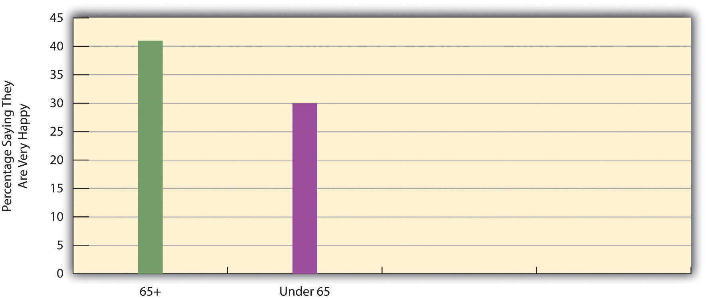
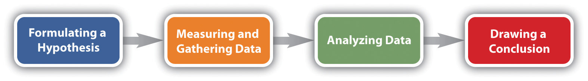
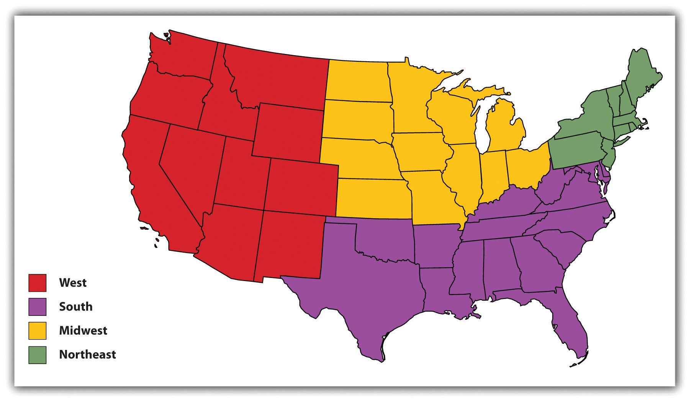
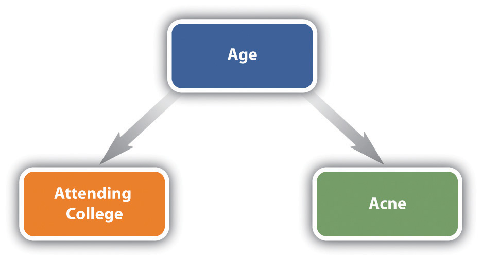

In the late 1990s, Oregon had one of the highest rates of hunger among the 50 states, and a higher rate than would have been expected from its more average level of poverty. Sociologist Mark S. Edwards of Oregon State University investigated the reasons for the high hunger rate and found problems in the way the state was distributing food stamps and making food available at food banks. In one county, for example, the food bank was located in an upper-class community, and hungry residents from elsewhere in the county were embarrassed to be seen at the food bank. Edwards’s research “assisted advocacy groups and legislators in improving the state’s efforts to enroll low income families in food stamp programs,” according to his department’s Web site (http://oregonstate.edu/cla/sociology/research), and the changes based on his findings were credited with lowering the state’s hunger rate before the deep economic recession began in 2008.
After the recession hit the nation, officials and news media outlets in Oregon and elsewhere turned to Edwards for advice on dealing with the growing hunger and food insecurity that resulted. Edwards was gratified that his research had helped make a difference. “I’ve chosen to do projects that are not high-powered, big academic projects,” he said, “but are simple research projects that are trying to deal with social justice questions in our state.” (Blome & Kravitz, 2006; Govier, 2010; Herring, 2008; E. Lindsey, 2009)Blome, C., & Kravitz, J. (2006, May 11). Stamping out food insecurity: More people in Benton County could be using food stamps. The Daily Barometer. Retrieved from http://media.barometer.orst.edu/media/storage/paper854/news/2006/2005/2011/News/Stamping.Out.Food.Insecurity-2291747.shtml; Govier, G. (2010, June 14). InterVarsity alumni—Mark Edwards. InterVarsity News. Retrieved from http://www.intervarsity.org/news/intervarsity-alumni-mark-edwards-; Herring, P. (2008, November 17). New report on hunger identifies Oregon as one of the worst. Extension Service News. Retrieved from http://extension.oregonstate.edu/news/story.php?S_No=614&storyType=news; Lindsey, E. (2009, November 17). Oregon’s recession means many in state go hungry. Oregon Public Broadcasting. Retrieved from http://news.opb.org/article/6220-oregons-recession-means-many-state-go-hungry
Some sociologists do research for its own sake, and some sociologists, such as Mark Edwards, do research to try to benefit society. Whatever the goals of their research, sociologists follow the scientific method as they gather information that they then analyze. This chapter examines the research process in sociology. It first discusses sociology as a social science and the different ways that people ordinarily try to understand social reality. It then examines the primary methods that sociologists use in their research and the practical and ethical issues they sometimes encounter.
Like anthropology, economics, political science, and psychology, sociology is a social science. All these disciplines use research to try to understand various aspects of human thought and behavior. Although this chapter naturally focuses on sociological research methods, much of the discussion is also relevant for research in the other social and behavioral sciences.
When we say that sociology is a social science, we mean that it uses the scientific method to try to understand the many aspects of society that sociologists study. An important goal is to yield generalizationsA conclusion drawn from sociological research that is meant to apply to broad categories of people but for which many exceptions will always exist.—general statements regarding trends among various dimensions of social life. We discussed many such generalizations in Chapter 1 "Sociology and the Sociological Perspective": men are more likely than women to commit suicide, young people were more likely to vote for Obama than McCain in 2008, and so forth. A generalization is just that: a statement of a tendency, rather than a hard-and-fast law. For example, the statement that men are more likely than women to commit suicide does not mean that every man commits suicide and no woman commits suicide. It means only that men have a higher suicide rate, even though most men, of course, do not commit suicide. Similarly, the statement that young people were more likely to vote for Obama than for McCain in 2008 does not mean that all young people voted for Obama; it means only that they were more likely than not to do so.

A generalization regarding the 2008 election is that young people were more likely to vote for Barack Obama than for John McCain. This generalization does not mean that every young person voted for Obama and no young person voted for McCain; it means only that they were more likely than not to vote for Obama.
Source: Photo courtesy of Roxanne Jo Mitchell, http://commons.wikimedia.org/wiki/File:Flickr_Obama_Austin_01.jpg.
Many people will not fit the pattern of such a generalization, because people are shaped but not totally determined by their social environment. That is both the fascination and the frustration of sociology. Sociology is fascinating because no matter how much sociologists are able to predict people’s behavior, attitudes, and life chances, many people will not fit the predictions. But sociology is frustrating for the same reason. Because people can never be totally explained by their social environment, sociologists can never completely understand the sources of their behavior, attitudes, and life chances.
In this sense, sociology as a social science is very different from a discipline such as physics, in which known laws exist for which no exceptions are possible. For example, we call the law of gravity a law because it describes a physical force that exists on the earth at all times and in all places and that always has the same result. If you were to pick up the book you are now reading—or the computer or other device on which you are reading or listening to—and then let go, the object you were holding would definitely fall to the ground. If you did this a second time, it would fall a second time. If you did this a billion times, it would fall a billion times. In fact, if there were even one time out of a billion that your book or electronic device did not fall down, our understanding of the physical world would be totally revolutionized, the earth could be in danger, and you could go on television and make a lot of money.
For better or worse, people are less predictable than this object that keeps falling down. Sociology can help us understand the social forces that affect our behavior, beliefs, and life chances, but it can only go so far. That limitation conceded, sociological understanding can still go fairly far toward such an understanding, and it can help us comprehend who we are and what we are by helping us first understand the profound yet often subtle influence of our social backgrounds on so many things about us.
Although sociology as a discipline is very different from physics, it is not as different as one might think from this and the other “hard” sciences. Like these disciplines, sociology as a social science relies heavily on systematic research that follows the standard rules of the scientific method. We return to these rules and the nature of sociological research later in this chapter. Suffice it to say here that careful research is essential for a sociological understanding of people, social institutions, and society.
At this point a reader might be saying, “I already know a lot about people. I could have told you that young people voted for Obama. I already had heard that men have a higher suicide rate than women. Maybe our social backgrounds do influence us in ways I had not realized, but what beyond that does sociology have to tell me?”
Students often feel this way because sociology deals with matters already familiar to them. Just about everyone has grown up in a family, so we all know something about it. We read a lot in the media about topics like divorce and health care, so we all already know something about these, too. All this leads some students to wonder if they will learn anything in their introduction to sociology course that they do not already know.
Let’s consider this issue a moment: how do we know what we think we know? Our usual knowledge and understanding of social reality come from at least five sources: (a) personal experience; (b) common sense; (c) the media (including the Internet); (d) “expert authorities,” such as teachers, parents, and government officials; and (e) tradition. These are all important sources of our understanding of how the world “works,” but at the same time their value can often be very limited.
Let’s look at these sources separately by starting with personal experience. Although personal experiences are very important, not everyone has the same personal experience. This fact casts some doubt on the degree to which our personal experiences can help us understand everything about a topic and the degree to which we can draw conclusions from them that necessarily apply to other people. For example, say you grew up in Maine or Vermont, where more than 98% of the population is white. If you relied on your personal experience to calculate how many people of color live in the country, you would conclude that almost everyone in the United States is also white, which certainly is not true. As another example, say you grew up in a family where your parents had the proverbial perfect marriage, as they loved each other deeply and rarely argued. If you relied on your personal experience to understand the typical American marriage, you would conclude that most marriages were as good as your parents’ marriage, which, unfortunately, also is not true. Many other examples could be cited here, but the basic point should be clear: although personal experience is better than nothing, it often offers only a very limited understanding of social reality other than our own.
If personal experience does not help that much when it comes to making predictions, what about common sense? Although common sense can be very helpful, it can also contradict itself. For example, which makes more sense, haste makes waste or he or she who hesitates is lost? How about birds of a feather flock together versus opposites attract? Or two heads are better than one versus too many cooks spoil the broth? Each of these common sayings makes sense, but if sayings that are opposite of each other both make sense, where does the truth lie? Can common sense always be counted on to help us understand social life? Slightly more than five centuries ago, everyone “knew” the earth was flat—it was just common sense that it had to be that way. Slightly more than a century ago, some of the leading physicians in the United States believed that women should not go to college because the stress of higher education would disrupt their menstrual cycles (Ehrenreich & English, 1979).Ehrenreich, B., & English, D. (1979). For her own good: 150 years of the experts’ advice to women. Garden City, NY: Anchor Books. If that bit of common sense(lessness) were still with us, many of the women reading this book would not be in college.
Still, perhaps there are some things that make so much sense they just have to be true; if sociology then tells us that they are true, what have we learned? Here is an example of such an argument. We all know that older people—those 65 or older—have many more problems than younger people. First, their health is generally worse. Second, physical infirmities make it difficult for many elders to walk or otherwise move around. Third, many have seen their spouses and close friends pass away and thus live lonelier lives than younger people. Finally, many are on fixed incomes and face financial difficulties. All of these problems indicate that older people should be less happy than younger people. If a sociologist did some research and then reported that older people are indeed less happy than younger people, what have we learned? The sociologist only confirmed the obvious.
The trouble with this confirmation of the obvious is that the “obvious” turns out not to be true after all. In the 2008 General Social Survey, which was given to a random sample of Americans, respondents were asked, “Taken all together, how would you say things are these days? Would you say that you are very happy, pretty happy, or not too happy?” Respondents aged 65 or older were actually slightly more likely than those younger than 65 to say they were very happy! About 40% of older respondents reported feeling this way, compared with only 30% of younger respondents (see Figure 2.1 "Age and Happiness"). What we all “knew” was obvious from common sense turns out not to have been so obvious after all.
Figure 2.1 Age and Happiness
Source: Data from General Social Survey, 2008.
If personal experience and common sense do not always help that much, how about the media? We learn a lot about current events and social and political issues from the Internet, television news, newspapers and magazines, and other media sources. It is certainly important to keep up with the news, but media coverage may oversimplify complex topics or even distort what the best evidence from systematic research seems to be telling us. A good example here is crime. Many studies show that the media sensationalize crime and suggest there is much more violent crime than there really is. For example, in the early 1990s, the evening newscasts on the major networks increased their coverage of murder and other violent crimes, painting a picture of a nation where crime was growing rapidly. The reality was very different, however, as crime was actually declining. The view that crime was growing was thus a myth generated by the media (Kurtz, 1997).Kurtz, H. (1997, August 12). The crime spree on network news. The Washington Post, p. D1.
Expert authorities, such as teachers, parents, and government officials, are a fourth source that influences our understanding of social reality. We learn much from our teachers and parents and perhaps from government officials, but, for better or worse, not all of what we learn from these sources about social reality is completely accurate. Teachers and parents do not always have the latest research evidence at their fingertips, and various biases may color their interpretation of any evidence with which they are familiar. As many examples from U.S. history illustrate, government officials may simplify or even falsify the facts. We should perhaps always listen to our teachers and parents and maybe even to government officials, but that does not always mean they give us a true, complete picture of social reality.
A final source that influences our understanding of social reality is tradition, or long-standing ways of thinking about the workings of society. Tradition is generally valuable, because a society should always be aware of its roots. However, traditional ways of thinking about social reality often turn out to be inaccurate and incomplete. For example, traditional ways of thinking in the United States once assumed that women and people of color were biologically and culturally inferior to men and whites. Although some Americans continue to hold these beliefs, these traditional assumptions have given way to more egalitarian assumptions. As we shall also see in later chapters, most sociologists certainly do not believe that women and people of color are biologically and culturally inferior.
If we cannot always trust personal experience, common sense, the media, expert authorities, and tradition to help us understand social reality, then the importance of systematic research gathered by sociology and the other social sciences becomes apparent.
As noted earlier, because sociology is a social science, sociologists follow the rules of the scientific methodThe classic steps by which scientific research is conducted, including the formulation of a hypothesis and the gathering and analysis of data. in their research. Most readers probably learned these rules in science classes in high school, college, or both. The scientific method is followed in the natural, physical, and social sciences to help yield the most accurate and reliable conclusions possible, especially ones that are free of bias or methodological errors. An overriding principle of the scientific method is that research should be conducted as objectively as possible. Researchers are often passionate about their work, but they must take care not to let the findings they expect and even hope to uncover affect how they do their research. This in turn means that they must not conduct their research in a manner that “helps” achieve the results they expect to find. Such bias can happen unconsciously, and the scientific method helps reduce the potential for this bias as much as possible.
This potential is arguably greater in the social sciences than in the natural and physical sciences. The political views of chemists and physicists typically do not affect how an experiment is performed and how the outcome of the experiment is interpreted. In contrast, researchers in the social sciences, and perhaps particularly in sociology, often have strong feelings about the topics they are studying. Their social and political beliefs may thus influence how they perform their research on these topics and how they interpret the results of this research. Following the scientific method helps reduce this possible influence.
Figure 2.2 The Scientific Method
As you probably learned in a science class, the scientific method involves these basic steps: (a) formulating a hypothesis, (b) measuring and gathering data to test the hypothesis, (c) analyzing these data, and (d) drawing appropriate conclusions (see Figure 2.2 "The Scientific Method"). In following the scientific method, sociologists are no different from their colleagues in the natural and physical sciences or the other social sciences, even though their research is very different in other respects. The next section discusses the stages of the sociological research process in more detail.
Sociological research consists of several stages. The researcher must first choose a topic to investigate and then become familiar with prior research on the topic. Once appropriate data are gathered and analyzed, the researcher can then draw appropriate conclusions. This section discusses these various stages of the research process.
The first step in the research process is choosing a topic. There are countless topics from which to choose, so how does a researcher go about choosing one? Many sociologists choose a topic based on a theoretical interest they may have. For example, Émile Durkheim’s interest in the importance of social integration motivated his monumental study of suicide that Chapter 1 "Sociology and the Sociological Perspective" discussed. Many sociologists since the 1970s have had a theoretical interest in gender, and this interest has motivated a huge volume of research on the difference that gender makes for behavior, attitudes, and life chances. The link between theory and research lies at the heart of the sociological research process, as it does for other social, natural, and physical sciences. Accordingly, this book discusses many examples of studies motivated by sociologists’ varied theoretical interests.

Many sociologists, such as the two pictured here, have a theoretical interest in gender that leads them to investigate the importance of gender for many aspects of the social world.
Many sociologists also choose a topic based on a social policy interest they may have. For example, sociologists concerned about poverty have investigated its effects on individuals’ health, educational attainment, and other outcomes during childhood, adolescence, and adulthood. Sociologists concerned about racial prejudice and discrimination have carried out many studies documenting their negative consequences for people of color. As Chapter 1 "Sociology and the Sociological Perspective" discussed and as this book emphasizes, the roots of sociology in the United States lie in the use of sociological knowledge to achieve social reform, and many sociologists today continue to engage in numerous research projects because of their social policy interests. The news story that began this chapter discussed an important example of this type of research. The “Sociology Making a Difference” box further discusses research of this type.
Survey Research to Help the Poor
The Community Service Society (CSS) of New York City is a nonprofit organization that, according to its Web site (http://www.cssny.org), “engages in advocacy, research and direct service” to help low-income residents of the city. It was established about 160 years ago and has made many notable accomplishments over the years, including aiding the victims of the Titanic disaster in 1912, helping initiate the free school lunch program that is now found around the United States, and establishing the largest senior volunteer program in the nation.
A key component of the CSS’s efforts today involves gathering much information about the lives of poor New Yorkers through an annual survey of random samples of these residents. Because the needs of the poor are so often neglected and their voices so often unheard, the CSS calls this effort the Unheard Third survey, as the poor represent about one-third of the New York City population. The Unheard Third survey asks respondents their opinions about many issues affecting their lives and also asks them many questions about such matters as their health and health care needs, employment status and job satisfaction, debt, and housing. The CSS then uses all this information in reports about the needs of the poor and near-poor in New York that it prepares for city and state officials, the news media, and key individuals in the private sector. In these ways, the CSS uses survey research in the service of society. As its Web site (http://www.cssny.org/research) states, “research is a critical tool we use to increase our understanding of conditions that drive poverty as we advocate for public policy and programs that will improve the economic standing of low-income New Yorkers.”
A third source of inspiration for research topics is personal experience. Like other social scientists (and probably also natural and physical scientists), many sociologists have had various experiences during childhood, adolescence, or adulthood that lead them to study a topic from a sociological standpoint. For example, a sociologist whose parents divorced while the sociologist was in high school may become interested in studying the effects of divorce on children. A sociologist who was arrested during college for a political protest may become interested in studying how effective protest might be for achieving the aims of a social movement. A sociologist who acted in high school plays may choose a dissertation during graduate school that focuses on a topic involving social interaction. Although the exact number will never be known, many research studies in sociology are undoubtedly first conceived because personal experience led the author to become interested in the theory or social policy addressed by the study.
Whatever topic is chosen, the next stage in the research process is a review of the literature. A researcher who begins a new project typically reads a good number of studies that have already been published on the topic that the researcher wants to investigate. In sociology, most of these studies are published in journals, but many are also published as books. The government and private research organizations also publish reports that researchers consult for their literature reviews.
Regardless of the type of published study, a literature review has several goals. First, the researcher needs to determine that the study she or he has in mind has not already been done. Second, the researcher needs to determine how the proposed study will add to what is known about the topic of the study. How will the study add to theoretical knowledge of the topic? How will the study improve on the methodology of earlier studies? How will the study aid social policy related to the topic? Typically, a research project must answer at least one of these questions satisfactorily for it to have a chance of publication in a scholarly journal, and a thorough literature review is necessary to determine the new study’s possible contribution. A third goal of a literature review is to see how prior studies were conducted. What research design did they use? From where did their data come? How did they measure key concepts and variables? A thorough literature review enhances the methodology of the researcher’s new study and enables the researcher to correct any possible deficiencies in the methodology of prior studies.
In “the old days,” researchers would conduct a literature review primarily by going to an academic library, consulting a printed index of academic journals, trudging through shelf after shelf of printed journals, and photocopying articles they found or taking notes on index cards. Those days are long gone, and thankfully so. Now researchers use any number of electronic indexes and read journal articles online or download a PDF version to read later. Literature reviews are still a lot of work, but the time they take is immeasurably shorter than just a decade ago.
After the literature review has been completed, it is time to formulate the hypothesis that will guide the study. As you might remember from a science class, a hypothesisA statement of the nature of the relationship between an independent variable and a dependent variable. is a statement of the relationship between two variables concerning the units of analysis the researcher is studying. To understand this definition, we must next define variable and unit of analysis. Let’s start with unit of analysisThe focus of sociological research, usually a person, organization, or geographical region., which refers to the type of entity a researcher is studying. As we discuss further in a moment, the most common unit of analysis in sociology is a person, but other units of analysis include organizations and geographical locations. A variableAny characteristic that varies among units of analysis. is any feature or factor that may differ among the units of analysis that a researcher is studying. Key variables in sociological studies of people as the units of analysis include gender, race and ethnicity, social class, age, and any number of attitudes and behaviors. Whatever unit of analysis is being studied, sociological research aims to test relationships between variables or, more precisely, to test whether one variable affects another variable, and a hypothesis outlines the nature of the relationship that is to be tested.
Suppose we want to test the hypothesis that women were more likely than men to have voted for Obama in 2008. The first variable in this hypothesis is gender, whether someone is a woman or a man. (As Chapter 11 "Gender and Gender Inequality" discusses, gender is actually more complex than this, but let’s keep things simple for now.) The second variable is voting preference—for example, whether someone voted for Obama or McCain. In this example, gender is the independent variable and voting preference is the dependent variable. An independent variableA variable that affects the dependent variable. is a variable we think can affect another variable. This other variable is the dependent variableA variable that is influenced by an independent variable., or the variable we think is affected by the independent variable (see Figure 2.3 "Causal Path for the Independent and Dependent Variable"). When sociological research tests relationships between variables, it normally is testing whether an independent variable affects a dependent variable.
Figure 2.3 Causal Path for the Independent and Dependent Variable
Many hypotheses in sociology involve variables concerning people, but many also involve variables concerning organizations and geographical locations. As this statement is meant to suggest, sociological research is conducted at different levels, depending on the unit of analysis chosen. As noted earlier, the most common unit of analysis in sociology is the person; this is probably the type of research with which you are most familiar. If we conduct a national poll to see how gender influences voting decisions or how race influences views on the state of the economy, we are studying characteristics, or variables, involving people, and the person is the unit of analysis. Another common unit of analysis in sociology is the organization. Suppose we conduct a study of hospitals to see whether the patient-to-nurse ratio (the number of patients divided by the number of nurses) is related to the average number of days that patients stay in the hospital. In this example, the patient-to-nurse ratio and the average number of days patients stay are both characteristics of the hospital, and the hospital is the unit of analysis. A third unit of analysis in sociology is the geographical location, whether it is cities, states, regions of a country, or whole societies. In the United States, for example, large cities generally have higher violent crime rates than small cities. In this example, the city is the unit of analysis.
Figure 2.4
One of the units of analysis in sociological research is the geographical location. The major regions of the United States are often compared on various characteristics. In one notable finding, the South has the highest regional homicide rate.
Source: Adapted from http://commons.wikimedia.org/wiki/File:Blank_US_Map.svg.
After the hypothesis has been formulated, the sociologist is now ready to begin the actual research. Data must be gathered via one or more of the research designs examined later in this chapter, and variables must be measured. Data can either be quantitative (numerical) or qualitative (nonnumerical). Data gathered through a questionnaire are usually quantitative. The answers a respondent gives to a questionnaire are coded for computer analysis. For example, if a question asks whether respondents consider themselves to be politically conservative, moderate, or liberal, those who answer “conservative” might receive a “1” for computer analysis; those who choose “moderate” might receive a “2”; and those who say “liberal” might receive a “3.”
Data gathered through observation and/or intensive interviewing, research designs discussed later in this chapter, are usually qualitative. If a researcher interviews college students at length to see what they think about dating violence and how seriously they regard it, the researcher may make simple comparisons, such as “most” of the interviewed students take dating violence very seriously, but without really statistically analyzing the in-depth responses from such a study. Instead, the goal is to make sense of what the researcher observes or of the in-depth statements that people provide to an interviewer and then to relate the major findings to the hypothesis or topic the researcher is investigating.
The measurement of variables is a complex topic and lies far beyond the scope of this discussion. Suffice it to say that accurate measurement of variables is essential in any research project. In a questionnaire, for example, a question should be worded clearly and unambiguously. Take the following question, which has appeared in national surveys: “Do you ever drink more than you think you should?” This question is probably meant to measure whether the respondent has an alcohol problem. But some respondents might answer yes to this question even if they only have a few drinks per year if, for example, they come from a religious background that frowns on alcohol use; conversely, some respondents who drink far too much might answer no because they do not think they drink too much. A researcher who interpreted a yes response from the former respondents as an indicator of an alcohol problem or a no response from the latter respondents as an indicator of no alcohol problem would be in error.
As another example, suppose a researcher hypothesizes that younger couples are happier than older couples. Instead of asking couples how happy they are through a questionnaire, the researcher decides to observe couples as they walk through a shopping mall. Some interesting questions of measurement arise in this study. First, how does the researcher know who is a couple? Second, how sure can the researcher be of the approximate age of each person in the couple? The researcher might be able to distinguish people in their 20s or early 30s from those in their 50s and 60s, but age measurement beyond this gross comparison might often be in error. Third, how sure can the researcher be of the couple’s degree of happiness? Is it really possible to determine how happy a couple is by watching them for a few moments in the mall? What exactly does being happy look like, and do all people look this way when they are happy? These and other measurement problems in this particular study might be so severe that the study should not be done, at least if the researcher hopes to publish it.
After any measurement issues have been resolved, it is time to gather the data. For the sake of simplicity, let’s assume the unit of analysis is the person. A researcher who is doing a study “from scratch” must decide which people to study. Because it is certainly impossible to study everybody, the researcher only studies a sampleA subset of a population., or subset of the population of people in whom the researcher is interested. Depending on the purpose of the study, the population of interest varies widely: it can be the adult population of the United States, the adult population of a particular state or city, all young women aged 13–18 in the nation, or countless other variations.
Many researchers who do survey research (discussed in a later section) study people selected for a random sampleA subset drawn from the larger population in which every unit in the population has the same chance of being included in the subset. of the population of interest. In a random sample, everyone in the population (whether it be the whole U.S. population or just the population of a state or city, all the college students in a state or city or all the students at just one college, and so forth) has the same chance of being included in the survey. The ways in which random samples are chosen are too complex to fully discuss here, but suffice it to say the methods used to determine who is in the sample are equivalent to flipping a coin or rolling some dice. The beauty of a random sample is that it allows us to generalize the results of the sample to the population from which the sample comes. This means that we can be fairly sure of the attitudes of the whole U.S. population by knowing the attitudes of just 400 people randomly chosen from that population.
Other researchers use nonrandom samples, in which members of the population do not have the same chance of being included in the study. If you ever filled out a questionnaire after being approached in a shopping mall or campus student center, it is very likely that you were part of a nonrandom sample. While the results of the study (marketing research or social science research) for which you were interviewed might have been interesting, they could not necessarily be generalized to all students or all people in a state or in the nation because the sample for the study was not random.
A specific type of nonrandom sample is the convenience sampleA nonrandom sample that is used because it is relatively quick and inexpensive to obtain., which refers to a nonrandom sample that is used because it is relatively quick and inexpensive to obtain. If you ever filled out a questionnaire during a high school or college class, as many students have done, you were very likely part of a convenience sample—a researcher can simply go into class, hand out a survey, and have the data available for coding and analysis within a few minutes. Convenience samples often include students, but they also include other kinds of people. When prisoners are studied, they constitute a convenience sample, because they are definitely not going anywhere. Partly because of this fact, convenience samples are also sometimes called captive-audience samples.
Another specific type of nonrandom sample is the quota sampleA nonrandom sample in which units in the sample are chosen according to one or more characteristics so that the sample resembles these characteristics of the population as closely as possible.. In this type of sample, a researcher tries to ensure that the makeup of the sample resembles one or more characteristics of the population as closely as possible. For example, on a campus of 10,000 students where 60% of the students are women and 40% are men, a researcher might decide to study 100 students by handing out a questionnaire to those who happen to be in the student center building on a particular day. If the researcher decides to have a quota sample based on gender, the researcher will select 60 women students and 40 male students to receive the questionnaire. This procedure might make the sample of 100 students more representative of all the students on campus than if it were not used, but it still does not make the sample entirely representative of all students. The students who happen to be in the student center on a particular day might be very different in many respects from most other students on the campus.
As we shall see later when research design is discussed, the choice of a design is very much related to the type of sample that is used. Surveys lend themselves to random samples, for example, while observation studies and experiments lend themselves to nonrandom samples.
After all data have been gathered, the next stage is to analyze the data. If the data are quantitative, the analysis will almost certainly use highly sophisticated statistical techniques beyond the scope of this discussion. Many statistical analysis software packages exist for this purpose, and sociologists learn to use one or more of these packages during graduate school. If the data are qualitative, researchers analyze their data (what they have observed and/or what people have told them in interviews) in ways again beyond our scope. Many researchers now use qualitative analysis software that helps them uncover important themes and patterns in the qualitative data they gather. However qualitative or quantitative data are analyzed, it is essential that the analysis be as accurate as possible. To go back to a point just made, this means that variable measurement must also be as accurate as possible, because even expert analysis of inaccurate data will yield inaccurate results. As a phrase from the field of computer science summarizes this problem, “garbage in, garbage out.” Data analysis can be accurate only if the data are accurate to begin with.
As researchers analyze their data, they naturally try to determine whether their analysis supports their hypothesis. As noted above, when we test a hypothesis, we want to be able to conclude that an independent variable affects a dependent variable. Four criteria must be satisfied before we can conclude this (see Table 2.1 "Criteria of Causality").
Table 2.1 Criteria of Causality
| 1. The independent variable and dependent variable must be statistically related. |
| 2. The independent variable must precede the dependent variable in time and/or in logic. |
| 3. The relationship between the independent variable and dependent variable must not be spurious. |
| 4. No better explanation exists for the relationship between the independent variable and the dependent variable. |
First, the independent variable and the dependent variable must be statistically related. That means that the independent variable makes a statistical difference for where one ranks on the dependent variable. Suppose we hypothesize that age was related to voting preference in the 2008 presidential election. Here age is clearly the independent variable and voting preference the dependent variable. (It is possible for age to affect voting preference, but it is not possible for voting preference to affect age.) Exit poll data indicate that 66% of 18- to 24-year-olds voted for Obama in 2008, while only 45% of those 65 and older voted for him. The two variables are thus statistically related, as younger voters were more likely than older voters to prefer Obama.
The second criterion is called the causal order (or chicken-and-egg) problem and reflects the familiar saying that “correlation does not mean causation.” Just because an independent and a dependent variable are related does not automatically mean that the independent variable affects the dependent variable. It might well be that the dependent variable is affecting the independent. To satisfy this criterion, the researcher must be sure that the independent variable precedes the dependent variable in time or in logic. In the example just discussed, age might affect voting preference, but voting preference definitely cannot affect age. However, causal order is not as clear in other hypotheses. For example, suppose we find a statistical relationship between marital happiness and job satisfaction: the more happy people are in their marriage, the more satisfied they are with their jobs. Which makes more sense, that having a happy marriage leads you to like your job more, or that being satisfied with your work leads you to have a happier marriage? In this example, causal order is not very clear, and thus the second criterion is difficult to satisfy.
The third criterion involves spurious relationshipsA relationship between an independent variable and a dependent variable that exists only because the effects of a third variable have not been taken into account.. A relationship between an independent variable and dependent variable is spurious if a third variable accounts for the relationship because it affects both the independent and dependent variables. Although this sounds a bit complicated, an example or two should make it clear. If you did a survey of Americans 18 and older, you would find that people who attend college have worse acne than people who do not attend college. Does this mean that attending college causes worse acne? Certainly not. You would find this statistical relationship only because a third variable, age, affects both the likelihood of attending college and the likelihood of having acne: young people are more likely than older people to attend college, and also more likely—for very different reasons—to have acne. Controlling for age makes it clear that the original relationship between attending college and having acne was spurious. Figure 2.5 "Diagram of a Spurious Relationship" diagrams this particular spurious relationship; notice that there is no causal arrow between the attending college and having acne variables.
Figure 2.5 Diagram of a Spurious Relationship
In another example, the more fire trucks at a fire, the more damage the fire causes. Does that mean that fire trucks somehow make fires worse, as the familiar saying “too many cooks spoil the broth” might suggest? Of course not! The third variable here is the intensity of the fire: the more intense the fire, the more fire trucks respond to fight it, and the more intense the fire, the more damage it causes. The relationship between number of fire trucks and damage the fire causes is spurious.
The final criterion of causality is that our explanation for the relationship between the independent and dependent variables is the best explanation. Even if the first three criteria are satisfied, that does not necessarily mean the two variables are in fact related. For example, the U.S. crime rate dropped in the early 1980s, and in 1984 the reelection campaign of President Ronald Reagan took credit for this drop. This relationship satisfied the first three criteria: the crime rate fell after President Reagan took office in 1981, the drop in the crime rate could not have affected the election of this president, and there was no apparent third variable that influenced both why Reagan was elected and why the crime rate fell. However, social scientists pointed to another reason that accounted for the crime rate decrease during the 1980s: a drop in the birth rate some 15–20 years earlier, which led to a decrease during the early 1980s of the number of U.S. residents in the high-crime ages of 15–30 (Steffensmeier & Harer, 1991).Steffensmeier, D., & Harer, M. D. (1991). Did crime rise or fall during the Reagan presidency? The effects of an “aging” U.S. population on the nation’s crime rate. Journal of Research in Crime and Delinquency, 28(3), 330–359. The relationship between the election of Ronald Reagan and the crime rate drop was thus only a coincidence.
Once the data are analyzed, the researcher finally determines whether the data analysis supports the hypothesis that has been tested, taking into account the criteria of causality just discussed. Whether or not the hypothesis is supported, the researcher (if writing for publication) typically also discusses what the results of the present research imply for both prior and future studies on the topic. If the primary purpose of the project has been to test or refine a particular theory, the conclusion will discuss the implications of the results for this theory. If the primary purpose has been to test or advance social policy, the conclusion will discuss the implications of the results for policy making relevant to the project’s subject matter.
We now turn to the major methods that sociologists use to gather the information they analyze in their research. Table 2.2 "Major Sociological Research Methods" summarizes the advantages and disadvantages of each method.
Table 2.2 Major Sociological Research Methods
| Method | Advantages | Disadvantages |
|---|---|---|
| Survey | Many people can be included. If given to a random sample of the population, a survey’s results can be generalized to the population. | Large surveys are expensive and time consuming. Although much information is gathered, this information is relatively superficial. |
| Experiments | If random assignment is used, experiments provide fairly convincing data on cause and effect. | Because experiments do not involve random samples of the population and most often involve college students, their results cannot readily be generalized to the population. |
| Observation (field research) | Observational studies may provide rich, detailed information about the people who are observed. | Because observation studies do not involve random samples of the population, their results cannot readily be generalized to the population. |
| Existing data | Because existing data have already been gathered, the researcher does not have to spend the time and money to gather data. | The data set that is being analyzed may not contain data on all the variables in which a sociologist is interested or may contain data on variables that are not measured in ways the sociologist prefers. |
The survey is the most common method by which sociologists gather their data. The Gallup Poll is perhaps the best-known example of a survey and, like all surveys, gathers its data with the help of a questionnaire that is given to a group of respondents. The Gallup Poll is an example of a survey conducted by a private organization, but it typically includes only a small range of variables. It thus provides a good starting point for research but usually does not include enough variables for a full-fledged sociological study. Sociologists often do their own surveys, as does the government and many organizations in addition to Gallup.
The General Social Survey, described earlier, is an example of a face-to-face survey, in which interviewers meet with respondents to ask them questions. This type of survey can yield a lot of information, because interviewers typically will spend at least an hour asking their questions, and a high response rateThe percentage of a sample that agrees to be included in a study, usually a survey. (the percentage of all people in the sample who agree to be interviewed), which is important to be able to generalize the survey’s results to the entire population. On the downside, this type of survey can be very expensive and time-consuming to conduct.
Because of these drawbacks, sociologists and other researchers have turned to telephone surveys. Most Gallup Polls are conducted over the telephone. Computers do random-digit dialing, which results in a random sample of all telephone numbers being selected. Although the response rate and the number of questions asked are both lower than in face-to-face surveys (people can just hang up the phone at the outset or let their answering machine take the call), the ease and low expense of telephone surveys are making them increasingly popular.
Mailed surveys, done by mailing questionnaires to respondents, are still used, but not as often as before. Compared with face-to-face surveys, mailed questionnaires are less expensive and time consuming but have lower response rates, because many people simply throw out the questionnaire along with other junk mail.
Whereas mailed surveys are becoming less popular, surveys done over the Internet are becoming more popular, as they can reach many people at very low expense. A major problem with Web surveys is that their results cannot necessarily be generalized to the entire population, because not everyone has access to the Internet.
Experiments are the primary form of research in the natural and physical sciences, but in the social sciences they are for the most part found only in psychology. Some sociologists still use experiments, however, and they remain a powerful tool of social research.
The major advantage of experiments is that the researcher can be fairly sure of a cause-and-effect relationship because of the way the experiment is set up. Although many different experimental designs exist, the typical experiment consists of an experimental groupIn an experiment, the group that experiences the experimental condition. and a control groupIn an experiment, the group that does not experience the experimental condition., with subjects randomly assigned to either group. The researcher makes a change to the experimental group that is not made to the control group. If the two groups differ later in some variable, then it is safe to say that the condition to which the experimental group was subjected was responsible for the difference that resulted.
Most experiments take place in the laboratory, which for psychologists may be a room with a one-way mirror, but some experiments occur in “the field,” or in a natural setting. In Minneapolis, Minnesota, in the early 1980s, sociologists were involved in a much-discussed field experiment sponsored by the federal government. The researchers wanted to see whether arresting men for domestic violence made it less likely that they would commit such violence again. To test this hypothesis, the researchers had police do one of the following after arriving at the scene of a domestic dispute: they either arrested the suspect, separated him from his wife or partner for several hours, or warned him to stop but did not arrest or separate him. The researchers then determined the percentage of men in each group who committed repeated domestic violence during the next 6 months and found that those who were arrested had the lowest rate of recidivism, or repeat offending (Sherman & Berk, 1984).Sherman, L. W., & Berk, R. A. (1984). The specific deterrent effects of arrest for domestic assault. American Sociological Review, 49, 261–272. This finding led many jurisdictions across the United States to adopt a policy of mandatory arrest for domestic violence suspects. However, replications of the Minneapolis experiment in other cities found that arrest sometimes reduced recidivism for domestic violence but also sometimes increased it, depending on which city was being studied and on certain characteristics of the suspects, including whether they were employed at the time of their arrest (Sherman, 1992).Sherman, L W. (1992). Policing domestic violence: Experiments and dilemmas. New York, NY: Free Press.
As the Minneapolis study suggests, perhaps the most important problem with experiments is that their results are not generalizable beyond the specific subjects studied. The subjects in most psychology experiments, for example, are college students, who are not typical of average Americans: they are younger, more educated, and more likely to be middle class. Despite this problem, experiments in psychology and other social sciences have given us very valuable insights into the sources of attitudes and behavior.
Observational research, also called field research, is a staple of sociology. Sociologists have long gone into the field to observe people and social settings, and the result has been many rich descriptions and analyses of behavior in juvenile gangs, bars, urban street corners, and even whole communities.
Observational studies consist of both participant observationField research in which the researcher is an active member of the group or setting being observed. and nonparticipant observationField research in which the researcher merely observes a group or setting.. Their names describe how they differ. In participant observation, the researcher is part of the group that she or he is studying. The researcher thus spends time with the group and might even live with them for a while. Several classical sociological studies of this type exist, many of them involving people in urban neighborhoods (Liebow, 1967, 1993; Whyte, 1943).Liebow, E. (1967). Tally’s corner. Boston, MA: Little, Brown; Liebow, E. (1993). Tell them who I am: The lives of homeless women. New York, NY: Free Press; Whyte, W. F. (1943). Street corner society: The social structure of an Italian slum. Chicago, IL: University of Chicago Press. Participant researchers must try not to let their presence influence the attitudes or behavior of the people they are observing. In nonparticipant observation, the researcher observes a group of people but does not otherwise interact with them. If you went to your local shopping mall to observe, say, whether people walking with children looked happier than people without children, you would be engaging in nonparticipant observation.
A related type of research design is intensive interviewing. Here a researcher does not necessarily observe a group of people in their natural setting but rather sits down with them individually and interviews them at great length, often for one or two hours or even longer. The researcher typically records the interview and later transcribes it for analysis. The advantages and disadvantages of intensive interviewing are similar to those for observational studies: intensive interviewing provides much information about the subjects being interviewed, but the results of such interviewing cannot necessarily be generalized beyond the subjects.
A classic example of field research is Kai T. Erikson’s Everything in Its Path (1976),Erikson, K. T. (1976). Everything in its path: Destruction of community in the Buffalo Creek flood. New York, NY: Simon and Schuster. a study of the loss of community bonds in the aftermath of a flood in a West Virginia mining community, Buffalo Creek. The flood occurred when an artificial dam composed of mine waste gave way after days of torrential rain. The local mining company had allowed the dam to build up in violation of federal law. When it broke, 132 million gallons of water broke through and destroyed several thousand homes in seconds while killing 125 people. Some 2,500 other people were rendered instantly homeless. Erikson was called in by the lawyers representing the survivors to document the sociological effects of their loss of community, and the book he wrote remains a moving account of how the destruction of the Buffalo Creek way of life profoundly affected the daily lives of its residents.
Similar to experiments, observational studies cannot automatically be generalized to other settings or members of the population. But in many ways they provide a richer account of people’s lives than surveys do, and they remain an important method of sociological research.
Sometimes sociologists do not gather their own data but instead analyze existing data that someone else has gathered. The U.S. Census Bureau, for example, gathers data on all kinds of areas relevant to the lives of Americans, and many sociologists analyze census data on such topics as poverty, employment, and illness. Sociologists interested in crime and the legal system may analyze data from court records, while medical sociologists often analyze data from patient records at hospitals. Analysis of existing data such as these is called secondary data analysisThe analysis of data from existing records.. Its advantage to sociologists is that someone else has already spent the time and money to gather the data. A disadvantage is that the data set being analyzed may not contain data on all the variables in which a sociologist may be interested or may contain data on variables that are not measured in ways the sociologist might prefer.
Nonprofit organizations often analyze existing data, usually gathered by government agencies, to get a better understanding of the social issue with which an organization is most concerned. They then use their analysis to help devise effective social policies and strategies for dealing with the issue. The “Learning From Other Societies” box discusses a nonprofit organization in Canada that analyzes existing data for this purpose.
Social Research and Social Policy in Canada
In several nations beyond the United States, nonprofit organizations often use social science research, including sociological research, to develop and evaluate various social reform strategies and social policies. Canada is one of these nations. Information on Canadian social research organizations can be found at http://www.canadiansocialresearch.net/index.htm.
The Canadian Research Institute for Social Policy (CRISP) at the University of New Brunswick is one of these organizations. According to its Web site (http://www.unb.ca/crisp/index.php), CRISP is “dedicated to conducting policy research aimed at improving the education and care of Canadian children and youth…and supporting low-income countries in their efforts to build research capacity in child development.” To do this, CRISP analyzes data from large data sets, such as the Canadian National Longitudinal Survey of Children and Youth, and it also evaluates policy efforts at the local, national, and international levels.
A major concern of CRISP has been developmental problems in low-income children and teens. These problems are the focus of a CRISP project called Raising and Leveling the Bar: A Collaborative Research Initiative on Children’s Learning, Behavioral, and Health Outcomes. This project at the time of this writing involved a team of five senior researchers and almost two dozen younger scholars. CRISP notes that Canada may have the most complete data on child development in the world but that much more research with these data needs to be performed to help inform public policy in the area of child development. CRISP’s project aims to use these data to help achieve the following goals, as listed on its Web site: (a) safeguard the healthy development of infants, (b) strengthen early childhood education, (c) improve schools and local communities, (d) reduce socioeconomic segregation and the effects of poverty, and (e) create a family enabling society (http://www.unb.ca/crisp/rlb.html). This project has written many policy briefs, journal articles, and popular press articles to educate varied audiences about what the data on children’s development suggest for child policy in Canada.
Research involving human subjects must follow certain ethical standards to make sure the subjects are not harmed. Such harm can be quite severe in medical research unless certain precautions are taken. For example, in 1932 the U.S. Public Health Service began studying several hundred poor, illiterate African American men in Tuskegee, Alabama. The men had syphilis, for which no cure then existed, and were studied to determine its effects. After scientists found a decade later that penicillin could cure this disease, the government scientists decided not to give penicillin to the Tuskegee men because doing so would end their research. As a result, several of the men died from their disease, and some of their wives and children came down with it. The study did not end until the early 1970s, when the press finally disclosed the experiment. Several observers likened it to experiments conducted by Nazi scientists. If the subjects had been white and middle class, they said, the government would have ended the study once it learned that penicillin could cure syphilis (Jones, 1981).Jones, J. H. (1981). Bad blood: The Tuskegee syphilis experiment. New York, NY: Free Press.

In a study that began in 1932 of syphilis among African American men in Tuskegee, Alabama, government physicians decided not to give penicillin to the men after it was found that this drug would cure syphilis.
Source: Photo courtesy of Department of Health, Education, and Welfare, Center for Disease Control, http://commons.wikimedia.org/wiki/File:Tuskegee-syphilis-experiment-test-subjects.gif.
Fortunately, sociological research does not have this potential for causing death or serious illness, but it still can cause other kinds of harm and thus must follow ethical standards. The federal government has an extensive set of standards for research on human subjects, and the major sociology professional society, the American Sociological Association, has a code of ethics for sociological research.
One of the most important ethical guidelines in sociological and other human-subject research concerns privacy and confidentiality. When they do research, sociologists should protect the privacy and confidentiality of their subjects. When a survey is used, the data must be coded (prepared for computer analysis) anonymously, and in no way should it be possible for any answers to be connected with the respondent who gave them. In field research, anonymity must also be maintained, and aliases (fake names) should normally be used when the researcher reports what she or he has been observing.
Some sociologists consider the privacy and confidentiality of subjects so important that they have risked imprisonment when they have refused to violate confidentiality. In one example, a graduate student named Mario Brajuha had been doing participant observation as a restaurant waiter on Long Island, New York, when the restaurant burned down. When the police suspected arson, they asked Brajuha to turn over his field notes. When Brajuha refused, he was threatened with imprisonment. Meanwhile, two suspects in the case also demanded his field notes for their legal defense, but again Brajuha refused. The controversy ended 2 years later when the suspects died and the prosecutor’s office abandoned its effort to obtain the notes (Brajuha & Hallowell, 1986).Brajuha, M., & Hallowell, L. (1986). Legal intrusion and the politics of fieldwork: The impact of the Brajuha case. Urban Life, 14, 454–478.
In another case, a graduate student named Rik Scarce refused to turn over his field notes on radical environmentalists after one of the groups he was studying vandalized a university laboratory. Scarce was jailed for contempt of court when he refused to tell a grand jury what he had learned about the group and spent several months behind bars (Monaghan, 1993).Monaghan, P. (1993). Sociologist is jailed for refusing to testify about research subject. Chronicle of Higher Education, 39, 10.
A third example aroused much discussion among sociologists when it came to light. Laud Humphreys studied male homosexual sex that took place in public bathrooms. He did so by acting as the lookout in several encounters where two men had sex; the men did not know Humphreys was a researcher. He also wrote down their license plates and obtained their addresses and a year later disguised himself and interviewed the men at their homes. Many sociologists and other observers later criticized Humphreys for acting so secretly and for violating his subjects’ privacy. Humphreys responded that he protected the men’s names and that their behavior was not private, as it was conducted in a public setting (Humphreys, 1975).Humphreys, L. (1975). Teamroom trade: Impersonal sex in public places. Chicago, IL: Aldine.
Another ethical issue concerns consent. Before a researcher can begin obtaining data, the subjects of the research must normally sign an informed consent form. This form summarizes the aims of the study and the possible risks of being a subject. If researchers want to study minors (under age 18), they normally must obtain a signature from a parent or legal guardian. Informed consent is a requirement for most “real” research these days, but ethical issues arise over the meaning of “consent.” For consent to have any real meaning, potential research subjects must have the right to refuse to take part in a research project without any penalties whatsoever. Otherwise, they may feel pressured to participate in the project without really wanting to do so. This result would violate what “consent” is supposed to mean in the research process. Sometimes subjects are promised a small reward (often between $5 and $20) for taking part in a research project, but they are still utterly free to refuse to do so, and this small inducement is not considered to be undue pressure to participate.
Informed consent becomes a particular problem when a researcher wants to include certain populations in a study. Perhaps the clearest example of such a problem is when a study involves prisoners. When prisoners are asked to be interviewed or to fill out a questionnaire, they certainly can refuse to do so, but they may feel pressured to participate. They realize that if they do participate, they may be more likely to be seen as a “model” prisoner, which helps them win “good time” that reduces their sentence or helps them win a release decision from a parole board. Conversely, if they refuse to participate, they not only lose these advantages but also may be seen as a bit of a troublemaker and earn extra scrutiny from prison guards. Scholarly societies continue to debate the ethical issues involved in studies of prisoners and other vulnerable populations (e.g., offenders in juvenile institutions, patients in mental institutions), and there are no easy answers to the ethical questions arising in such studies.
As all these examples of ethical issues demonstrate, it is not always easy to decide whether a particular research project is ethically justifiable. Partly for this reason, colleges and universities have committees that review proposed human-subject research to ensure that federal guidelines are followed.
Should the primary aim of sociological research be to help improve society, or should its primary aim be to discover social knowledge for its own sake? There is no right or wrong answer to this question. However, following in the spirit of the early American sociologists, this book hopes to show the relevance of sociological knowledge and insights, as derived from sound, objective research, for addressing many of the social issues facing American society and various nations around the world.
Although sociological research findings may be relevant for many social issues, this certainly does not guarantee that these findings will actually be marshaled to address these issues. For this to happen, elected officials and other policymakers must be open to the implications of research findings, and an informed public must make its desire for addressing these issues known. For many readers, the introduction to sociology course they are now taking might be the only sociology course they ever take; other readers will take more sociology courses and may even become a sociology major. Regardless of how many sociology courses you do take, and regardless of whether you become an elected official or policymaker or you remain a member of the informed public, this book hopes to help you think like a sociologist as social issues continue and emerge in the many years ahead.
Imagine that you are the mayor of a city of about 100,000 residents. Similar to many other cities, yours has a mixture of rich and poor neighborhoods. Because you and one of your key advisers were sociology majors in college, you both remember that the type of neighborhoods in which children grow up can influence many aspects of their development. Your adviser suggests that you seek a large federal grant to conduct a small field experiment to test the effects of neighborhoods in your city. In this experiment, 60 families from poor neighborhoods would be recruited to volunteer. Half of these families would be randomly selected to move to middle-class neighborhoods with their housing partially subsidized (the experimental group), and the other 30 families would remain where they are (the control group). A variety of data would then be gathered about the children in both groups of families over the next decade to determine whether living in middle-class neighborhoods improved the children’s cognitive and social development.
You recognize the potential value of this experiment, but you also wonder whether it is entirely ethical, as it would be virtually impossible to maintain the anonymity of the families in the experimental group and perhaps even in the control group. You also worry about the political problems that might result if the people already in the middle-class neighborhoods object to the new families moving into their midst. Do you decide to apply for the federal grant? Why or why not?